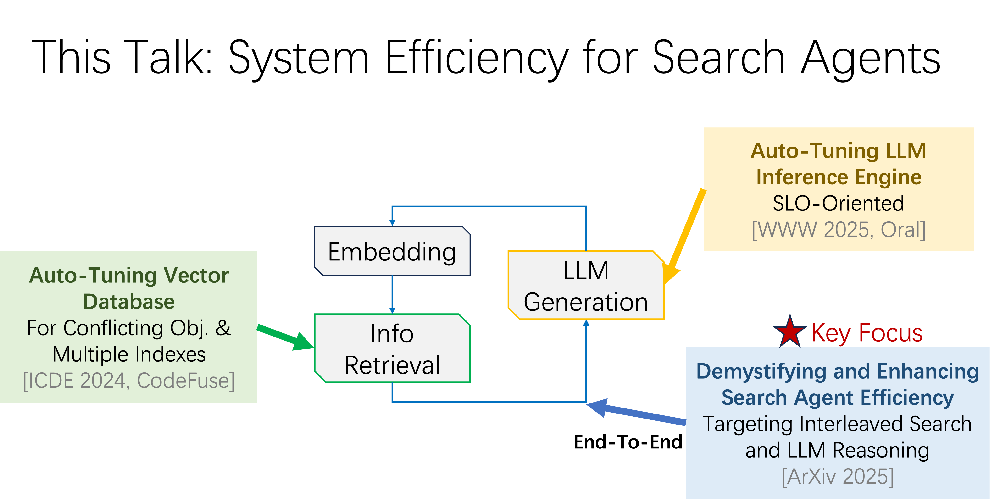

Towards Efficient LLM Search Agents
The dramatic leap in reasoning capabilities of large language models has given rise to advanced search agents. These agents approach complex problems not in a single step, but by emulating human experts - engaging in multi-turn, interleaved cycles of "information retrieval" and "reasoning". This iterative "retrieve-then-reason" paradigm enables systems such as DeepResearch and Search-R1 to demonstrate remarkable problem-solving abilities on challenging tasks. However, system inefficiency remains a key bottleneck in real-world deployment. This talk presents three complementary efforts aimed at improving system efficiency across different stages: (1) VDTuner, which enhances speed and accuracy in vector retrieval; (2) SCOOT, which optimizes the efficiency of large language model inference; and (3) SearchAgent-X, which enables end-to-end efficient reasoning of search agent systems.
